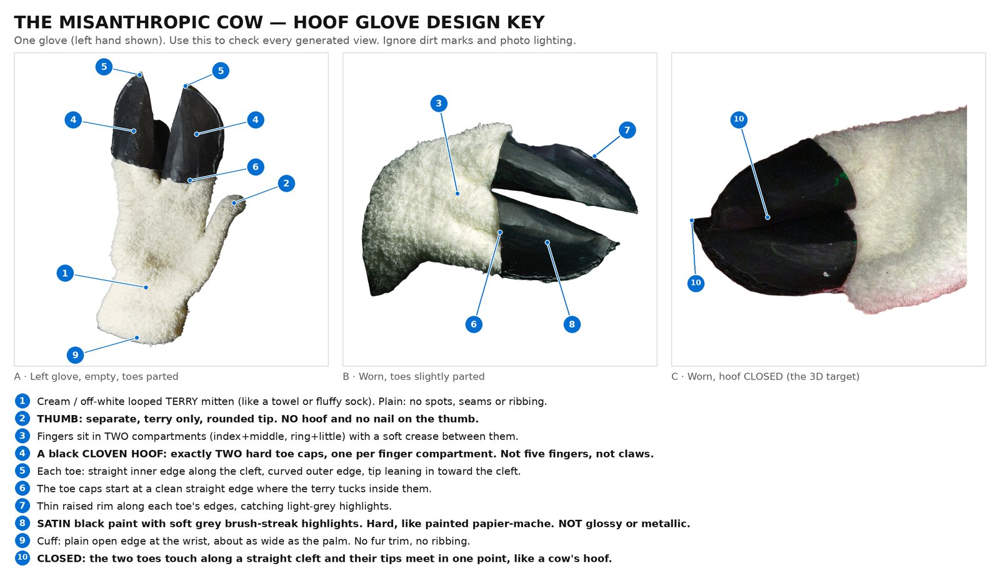
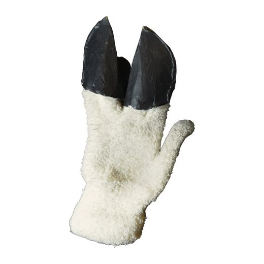
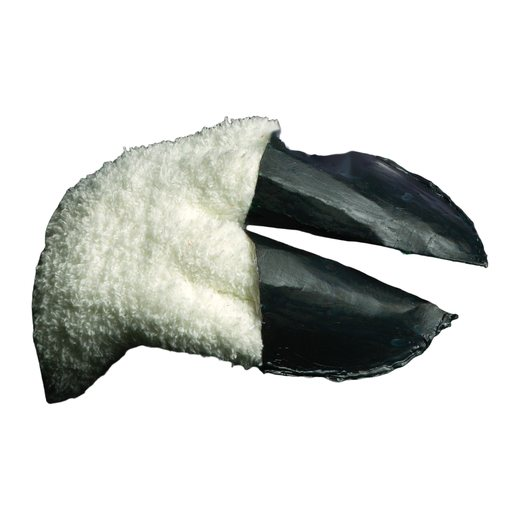
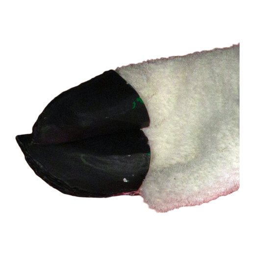
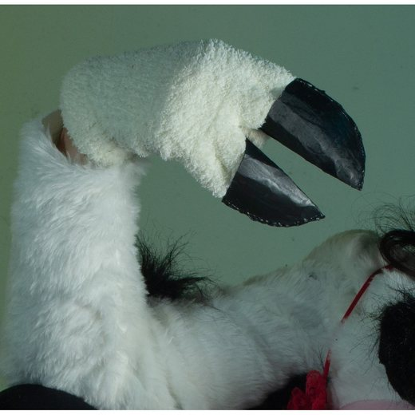
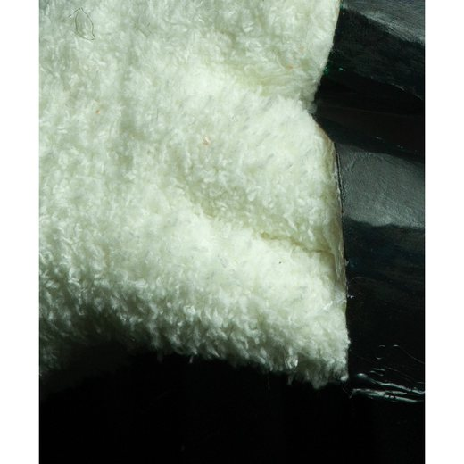
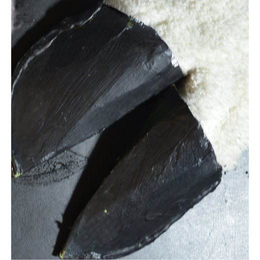
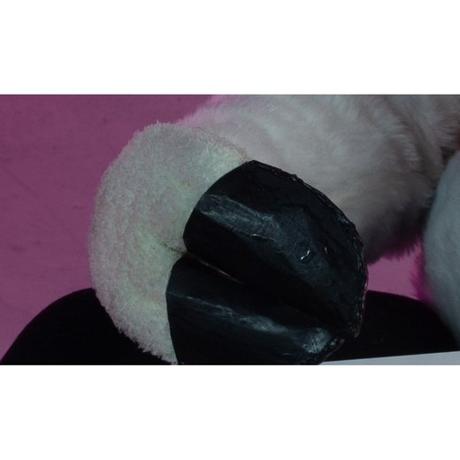

The Misanthropic Cow · Tripo multiview · one left glove
Hoof Glove View Kit
Five steps to four matching views of one glove: back of hand, little-finger side, thumb side and palm. Three come from ChatGPT, edited from your real photos; the palm view is a mirror. Each step: attach the images shown, in order. Paste the prompt. Check the result. Save it.
Where the images areEach step has its own package in the chat. The files are numbered in attach order.
Which toolChatGPT image generation. Keep one chat for Steps 1 to 4.
Pink tilesImages you made and approved in an earlier step. Attach them from your own downloads.
Design key: check every result against this

The four details an image model is most likely to get wrong are bold: no hoof on the thumb, exactly two toe caps, satin (not glossy) paint, and the closed cleft.
Step 1 of 5
Lock in the design
Get the image model to read the glove correctly before it draws anything. No image is made in this step.
Start a brand-new chat. Images: STEP_1_Lock_in_the_design.zip
Attach, in this order
1

1_REF_A_left_glove_flat_back_of_hand.png
Real left glove, empty, laid flat, hoof toes parted
2

2_REF_B_worn_side_hoof_almost_closed.png
Real glove worn, toes slightly parted
3

3_REF_C_worn_hoof_closed_from_above.png
Real glove worn, hoof CLOSED
4

4_DETAIL_1_hoof_toes_shape_and_rim.jpg
Toe shape and rim, close-up
5
5_DESIGN_KEY.png
Annotated design key
Then paste
I'm making a 3D model of a costume glove belonging to my character, The Misanthropic Cow. Over the next few messages I'll ask you for three product-reference views of ONE of these gloves (a left glove): the back of the hand, the little-finger side and the thumb side. They will be fed into an image-to-3D tool, so being accurate to the real glove matters far more than looking nice.
Attached, in order:
1. REF_A: the real left glove, empty and laid flat, seen from the back of the hand. The hoof toes are parted here; in my views they must be closed.
2. REF_B: the real glove being worn, hoof toes slightly parted. Ignore the black background.
3. REF_C: the real glove being worn with the hoof CLOSED, the way I want it.
4. DETAIL_1: close-up of the two toe caps and their rim. Ignore the white fur sleeve: it belongs to the bodysuit, not the glove.
5. DESIGN_KEY: my annotated breakdown of the parts. It is for understanding only. Never draw its numbers, circles, lines or text.
DESIGN BRIEF — THE MISANTHROPIC COW HOOF GLOVE
(Authoritative. Follow it for every image in this chat.)
WHAT IT IS: ONE handmade costume glove for a LEFT hand: a cream terry-cloth mitten with a separate thumb, whose fingers end in a hard black cow's CLOVEN HOOF made of exactly two toe caps. Not a pair. Not a five-finger glove. Not a furry paw. Not a cartoon plush hoof.
POSE (every view): as if worn by an invisible hand. Plump and filled out, fingers straight and together, the two hoof toes CLOSED. The glove stands upright: hoof at the TOP of the frame, cuff opening at the BOTTOM. The thumb angles out about 25-30 degrees from the hand, with a clear gap between thumb and hand down to the thumb's base. No hand, wrist, arm or skin is visible anywhere.
PROPORTIONS (estimated from my photos): about 30 cm from cuff to hoof tip and about 10 cm wide across the hand, so about 3 times as tall as wide. The hoof is the top ~37% of the length; the terry is the lower ~63%. The thumb is about 6-7 cm long and leaves the hand about halfway up the terry. From the side the glove is slim: about 5 cm thick at the knuckles.
PARTS, TOP TO BOTTOM:
1. HOOF (top ~37%): two hard, hollow black toe caps side by side, one over the index+middle fingers and one over the ring+little fingers. Seen from the back of the hand, each toe has a straight inner edge along the centre line and a curved outer edge, and its tip leans in toward the centre. CLOSED, the two toes touch along one straight cleft line down the middle of the hoof and their tips meet in a single point, so together they make a rounded, pointed-arch outline like a real cow's hoof.
2. HOOF FROM THE SIDE: from the little-finger or thumb edge, the hoof is a slim, rounded wedge, as thick as the hand at its base, tapering to a blunt point at the tip.
3. HOOF FINISH: satin black paint with soft grey brush-streak highlights, slightly uneven like painted papier-mache. A thin raised rim runs along the toe edges and catches light-grey highlights. Satin, not glossy; not metallic; no green or rainbow sheen.
4. HOOF BASE: each toe cap starts at a clean, straight, slightly slanted edge where the terry tucks inside it.
5. FINGERS: just below the hoof, the fingers sit in two terry compartments, with a soft crease between them that continues the cleft line a short way down the glove.
6. THUMB: a separate terry thumb with a rounded tip. Terry only: NO hoof, cap, claw or nail.
7. BODY: cream / off-white looped terry cloth, like a bath towel or a fluffy sock (small dense loops about 2-3 mm). Plain: no pattern, no visible seams. Clean cream: ignore the grey dirt marks and coloured studio light in my photos.
8. CUFF: a plain, straight, open edge at the wrist, about as wide as the palm. No ribbing, no band, no fur trim.
NEVER ADD: five separate fingers, claws, talons or nails, a hoof or cap on the thumb, a third hoof toe, a horseshoe, cow-print spots, a white fur cuff or sleeve, a knitted rib cuff, contrasting stitching, gloss, chrome or a green sheen on the hoof, a hand, wrist, arm or skin, a second glove, a stand or mannequin, or any text, labels, numbers or arrows.
Don't make an image yet. First reply with:
(a) anything in the photos that contradicts or adds to the brief, and
(b) one or two sentences each on what the back-of-hand view, the little-finger-side view and the thumb-side view of THIS glove should look like, with the hoof closed.
Check before approving
If it gets any of these wrong, correct it in one line (for example: "Correction: the thumb has no hoof; it is plain terry.") and wait for it to confirm before moving on.
Step 2 of 5
Front view: back of the hand
REF_A already shows this view of the real glove, so this is an edit, not an invention. This view sets the scale and look for every other one.
Same chat as Step 1. Images: STEP_2_Front_back_of_hand.zip
Attach, in this order
1
1_REF_A_left_glove_flat_back_of_hand.png
This exact view of the real glove (edit from it)
2
2_REF_C_worn_hoof_closed_from_above.png
How the CLOSED hoof looks
3

3_DETAIL_3_terry_loop_texture.jpg
Terry loop texture
4

4_DETAIL_4_hoof_surface_brush_texture.jpg
Hoof paint, brush streaks and rim
Then paste
IMAGE 1 OF 3: FRONT VIEW (BACK OF THE HAND).
Attached, in order: REF_A (the real glove from exactly this side; use it as the starting point), REF_C (how the CLOSED hoof looks), DETAIL_3 (the terry loops), DETAIL_4 (the hoof's paint, brush streaks and rim).
Make a photograph of this exact glove (one LEFT glove) seen straight-on from the back of the hand, starting from REF_A, with these changes only:
- It is worn by an invisible hand: plump and rounded, not flat and empty.
- The two hoof toes are CLOSED: they touch along one straight vertical cleft down the centre of the hoof, and their tips meet in a single point at the top. The closed hoof has a rounded, pointed-arch outline.
- The terry is clean cream (no grey dirt marks).
- The glove stands perfectly upright, hoof at the top, cuff at the bottom; the hoof is symmetrical about its cleft.
What this view must show, top to bottom:
- The closed black cloven hoof (top ~37% of the height): two toe caps side by side, straight cleft down the middle, satin black with soft grey brush highlights, thin rim along the edges.
- The clean straight edge where the terry tucks into the toe caps.
- The cream terry hand, with a soft crease continuing the cleft a short way down.
- The THUMB on the RIGHT side of the glove, angled out about 25-30 degrees, with white background visible between thumb and hand. Plain terry, rounded tip, NO hoof.
- The straight open cuff edge at the bottom of the frame, about as wide as the palm.
CAMERA AND FRAMING: Camera at the glove's mid-height, looking straight across (level, not from above). Long-lens, near-orthographic look with very little perspective distortion. Square 1:1 image. Pure white background. The glove is centred, upright, and fills about 85% of the image height. Soft, even, diffuse studio light; no hard shadows and no floor shadow. Photorealistic product photograph of the real handmade object, with its real terry and painted textures. No text, labels, numbers, arrows, borders or watermark.
Follow the design brief exactly.
Check before approving
Save as 1_FRONT_approved.png
Download it and rename it 1_FRONT_approved.png. You'll attach it to every later step and mirror it in Step 5.
Step 3 of 5
Side view: little-finger edge
The simplest side: the thumb is hidden behind the hand, so this is just the glove's slim profile and the side of the hoof.
Same chat. If the chat has started to drift, open a fresh one and run Step 1 again first. Images: STEP_3_Side_little_finger.zip
Attach, in this order
1
Your image
1_FRONT_approved.png
From an earlier step
2
2_REF_B_worn_side_hoof_almost_closed.png
Real glove worn: thickness of the toes
3

3_DETAIL_2_closed_hoof_end_on_cleft.jpg
Closed hoof seen from its tip end
Then paste
IMAGE 2 OF 3: SIDE VIEW (LITTLE-FINGER EDGE).
Attached, in order: 1_FRONT_approved (my approved image 1; match it exactly), REF_B (the real glove worn, showing how thick the toe caps are), DETAIL_2 (the closed hoof seen from its tip end: rounded, with the cleft across it).
Make a photograph of the same single glove, rotated exactly 90 degrees so the camera looks straight at its LITTLE-FINGER EDGE. The glove is still upright: hoof at the top, cuff at the bottom. The back of the hand faces the RIGHT edge of the frame and the palm faces the LEFT edge.
What this view must show:
- A slim, upright profile: the glove is only about 5 cm thick, about half as wide as in the front view.
- At the top, the side of the closed hoof: a slim, rounded black wedge, as thick as the hand at its base, tapering to a blunt point at the tip. Only the outer side of ONE toe cap is visible; the cleft is on the far side and hidden. Same satin black, grey brush highlights and thin rim.
- The clean straight edge where the terry tucks into the hoof.
- Below it, the cream terry hand and wrist in profile, slightly fuller toward the knuckles.
- The THUMB is completely hidden behind the hand: no thumb visible.
- The open cuff edge at the bottom, seen edge-on.
MATCH MY APPROVED VIEW: same glove, same scale, same camera height, same lighting, same white background, same terry colour and hoof finish. The hoof tip and the bottom of the cuff sit at the same heights in the frame as in 1_FRONT_approved.
CAMERA AND FRAMING: Camera at the glove's mid-height, looking straight across (level, not from above). Long-lens, near-orthographic look with very little perspective distortion. Square 1:1 image. Pure white background. The glove is centred, upright, and fills about 85% of the image height. Soft, even, diffuse studio light; no hard shadows and no floor shadow. Photorealistic product photograph of the real handmade object, with its real terry and painted textures. No text, labels, numbers, arrows, borders or watermark.
Follow the design brief exactly.
Check before approving
Save as 2_SIDE_LITTLE_FINGER_approved.png
Save it as 2_SIDE_LITTLE_FINGER_approved.png and move on to Step 4.
Step 4 of 5
Side view: thumb edge
The hardest view: the thumb comes toward the camera. It's optional. If it fights you after two fixes, skip it; Tripo works without it.
Same chat. Images: STEP_4_Side_thumb.zip
Attach, in this order
1
Your image
1_FRONT_approved.png
From an earlier step
2
Your image
2_SIDE_LITTLE_FINGER_approved.png
From an earlier step
3
3_REF_A_left_glove_flat_back_of_hand.png
Real glove: thumb shape and position
Then paste
IMAGE 3 OF 3: SIDE VIEW (THUMB EDGE).
Attached, in order: 1_FRONT_approved and 2_SIDE_LITTLE_FINGER_approved (my approved images; match them), REF_A (the real glove; it shows the thumb's shape and where it joins the hand).
Make a photograph of the same single glove seen from the opposite side to image 2: the camera looks straight at its THUMB EDGE. The glove is upright: hoof at the top, cuff at the bottom. The back of the hand faces the LEFT edge of the frame and the palm faces the RIGHT edge.
What this view must show:
- The same slim profile as image 2, almost a mirror image of it: same height, same thickness, same hoof wedge at the top (one toe cap's outer side; the cleft is hidden).
- The THUMB is on the near side, pointing up and toward the camera, so it looks short and rounded. It overlaps the lower half of the hand, a little toward the palm side (right). Plain terry with a rounded tip: NO hoof, cap or nail.
- The cream terry and the open cuff edge at the bottom, as in image 2.
MATCH MY APPROVED VIEW: same glove, same scale, same camera height, same lighting, same white background, same terry colour and hoof finish. The hoof tip and the bottom of the cuff sit at the same heights in the frame as in 1_FRONT_approved.
CAMERA AND FRAMING: Camera at the glove's mid-height, looking straight across (level, not from above). Long-lens, near-orthographic look with very little perspective distortion. Square 1:1 image. Pure white background. The glove is centred, upright, and fills about 85% of the image height. Soft, even, diffuse studio light; no hard shadows and no floor shadow. Photorealistic product photograph of the real handmade object, with its real terry and painted textures. No text, labels, numbers, arrows, borders or watermark.
Follow the design brief exactly.
Check before approving
Save as 3_SIDE_THUMB_approved.png
Save it as 3_SIDE_THUMB_approved.png. If you skip it, just leave that Tripo slot empty.
Step 5 of 5
Palm view (mirror) and Tripo upload
No AI needed. The palm side of a mitten is the mirror image of the back of the hand, and a mirrored approved view is better Tripo input than a freshly generated one.
Any photo app, then Tripo. Images: STEP_5_Palm_view_and_Tripo.zip
Do this
MAKE THE PALM VIEW (no ChatGPT needed):
1. Open 1_FRONT_approved.png in any photo app.
2. Flip it horizontally (Mac Preview: Tools > Flip Horizontal; Windows Photos: Edit > Flip; Photoshop: Image > Image Rotation > Flip Canvas Horizontal).
3. Save the copy as 4_BACK_PALM_mirrored.png. The thumb is now on the LEFT.
THEN SEND ME ALL THE IMAGES FIRST (recommended): attach 1_FRONT_approved, 2_SIDE_LITTLE_FINGER_approved, 3_SIDE_THUMB_approved (if you made it) and 4_BACK_PALM_mirrored here. I'll normalise them (same height, same centring, white square) and give you back the exact files for Tripo.
Tripo slots are listed in TRIPO_UPLOAD.txt.
Check before approving
Save as 4_BACK_PALM_mirrored.png
Send the views back to me for normalising before you upload to Tripo.
When a result is wrong
Fix-up prompts
Paste the one that matches. In ChatGPT, brush over just the wrong area with the Select tool first. Attach a detail image if the model needs reminding. These are all in FIX_UP_PROMPTS.zip.
Fix A
Hoof became fingers, claws or more than two toes
The hoof is wrong. This glove ends in a cow's cloven hoof: exactly TWO hard black toe caps side by side, one over the index+middle fingers and one over the ring+little fingers. No separate fingers, claws or nails (see DESIGN_KEY item 4). Keep everything else in the image exactly the same and fix only the hoof.
Fix B
Hoof is open instead of closed
Close the hoof: the two toe caps must touch along one straight cleft line down the middle, with their tips meeting in a single point, like REF_C. Keep everything else exactly the same.
Fix C
Thumb got a hoof, or the thumb is missing
The thumb is a separate plain cream terry thumb with a rounded tip. It has NO hoof, cap, claw or nail. It angles out about 25-30 degrees from the hand on the [RIGHT / LEFT] side, with white background between thumb and hand. Fix only the thumb.
Fix D
Hoof is glossy, metallic or green
The hoof finish is satin black paint with soft grey brush-streak highlights and a thin rim catching light-grey highlights, like DETAIL_4. It is not glossy, metallic or iridescent and has no green sheen. Keep the shapes and everything else the same.
Fix E
A fur cuff, sleeve or arm appeared
Remove the [fur cuff / sleeve / arm / hand]. The glove ends at a plain, straight, open terry cuff edge at the wrist, with nothing inside or around it. Keep everything else the same.
Fix F
Drew a pair
Only one glove, please. Remove the second one and centre the remaining one. Keep everything else the same.
Fix G
Wrong angle (three-quarter, tilted or from above)
This is a three-quarter / tilted / high view. I need a true [FRONT / SIDE] view: rotate the glove to exactly 90-degree steps, stand it perfectly upright (hoof at the top, cuff at the bottom) and put the camera level with its middle, looking straight across. Keep the glove itself identical.
Fix H
Terry looks like fur, fleece or knit
The cream fabric is looped terry cloth, like a bath towel or a fluffy sock: small dense loops about 2-3 mm, like DETAIL_3. It is not long fur, sherpa fleece or a knit. Keep the shapes and everything else the same.
Fix I
Proportions are off
The proportions are off. The glove is about 3 times as tall as it is wide. The black hoof is the top ~37% of the height and the cream terry is the lower ~63%. The thumb is about 6-7 cm long on a 30 cm glove. Keep everything else the same.
Fix J
Text, labels or a border appeared
Remove all text, labels, numbers, arrows and borders. Pure white background only. Keep the glove exactly the same.
Detail images for fixes
REF_C_worn_hoof_closed_from_above.png
Closed hoof (for Fix A, B)
DETAIL_4_hoof_surface_brush_texture.jpg
Hoof finish and rim (for Fix D)
DETAIL_3_terry_loop_texture.jpg
Terry loops (for Fix H)
REF_A_left_glove_flat_back_of_hand.png
Thumb shape and position (for Fix C)
DESIGN_KEY.png
Design key (for any fix)
Finally
Upload to Tripo multiview
Front
1_FRONT_approved.png(back of hand, thumb on the right)
Back
4_BACK_PALM_mirrored.png(palm, thumb on the left)
Right
3_SIDE_THUMB_approved.png(thumb edge; leave empty if you skipped Step 4)